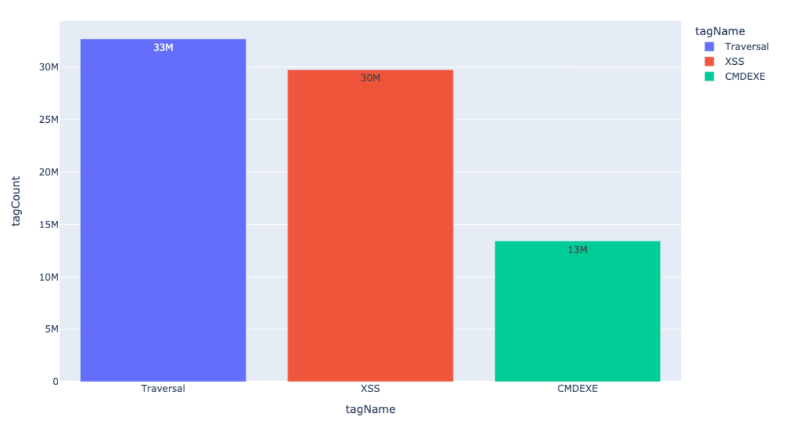

Table of Contents
The NGWAF Report provides a high-level view of your Corp and Top Sites which see the most traffic, which sites are attacked the most, which sites are seeing the most blocked traffic and which sites we are identifying the most flagged, malicious IPs for. In addition to high-level stats, the NGWAF Report also provides a view into attack types, and their source, which helps enable your security team to understand better how your services are being attacked and the direction you should take to mitigate them.
Global Attack Sources
| Country | Country Code | Attacks |
|---|
Attack map, also known as a cyber attack map, is a visual representation of the source and destination country locations around the world generating attack traffic. It is based on real-time application layer security analysis of attack Signals we analyze and identify coming from specific countries over the last 90 days for your corp/sites.
All Requests Over the Last 90 Days
This chart shows you the total number of requests over the previous 90 days. Here we can compare the number of attack vs blocked requests compared to the overall number of requests that your entire Corp has handled.
Top Four Sites by Blocked Requests
These are the Top 4 Sites/Workspaces in your Corp that have blocked requests. This will include requests that have been blocked by System Alerts, Request Rules, Rate Limit Rules, and Templated Rules.
Top Attack Signals by Site
These are the top sites that have sent the most attack traffic. Attack traffic is considered to be the following signals: CMDEXE, Traversal, Backdoor, Attack Tooling, SQLI, and XSS. The default threshold for these attack signals is 50 in 1 minute. It is recommended to reduce this threshold if the application is extremely vulnerable. In some cases, it might be necessary to block these requests immediately, which can be done with a Request Rule.
Sites with CVE Anomaly Signals
These sites are seeing the most CVE signals. The CVE Templated Rules should be enabled in order to see data in this graph. It is recommended to turn on CVE rules to virtually patch the applications in your environment. Turning on non-relevant CVE rules is not recommended.
Sites with Login and Registration Signals
Logins and Registration signals will allow you to see whether account takeover attacks have occurred. If you see a spike in Login Failure vs Success, that could indicate a cred stuffing attempt. It is recommended to turn on as many ATO Templated Rules as possible for visibility.
Sites with Anomaly Signals
Anomaly Signals indicate an abnormal request, for example, the No Content-Type signal indicates the Content-Type header value is missing. This does not mean the request is an attack, but something that may need attention.
Sites with Corp Signals
Corp Signals are signals created by individual users that have access to the NGWAF. These custom signals can be used in a Request Rule to identify requests with request header or body values.
Single Sign On is enabled
Inactive User Accounts
Increase account security by removing access for all inactive users.
In order to avoid unnecessary access to the sensitive information on your NGWAF, it's best to audit the users that have access to the application, but haven't logged in yet. For those who may not need access to the product, it is recommended to remove their access.
| Role | Status |
|---|
Corp Allow Rules
Please review any Corp 'Allow' Rules as they take precedence
Allow rules permit traffic that is explicitly allowed. Allow rules take precedence over block rules, regardless of whether they were created at the corp or site level. Allow/Block Precedence
ads-nonprod Site
Top Attack Signals Over Past 30 Days

Visibility is critical when organizations are dealing with malicious activity across their web applications. Layer 7 attacks such as app-level DDoS, API abuse, and account takeovers pose both security and resource-utilization risks for a company and its users: these attacks can cause excessive resource consumption and impact performance across applications. Top Attack Signals gives that visibility over the past 30 days to help you focus your security efforts.
Sample of Site Events
Events are actions that Signal Sciences takes as the result of regular threshold-based blocking, templated rules, and site alerts.
| Source | Country Code | Reasons | Path |
|---|---|---|---|
| 202.61.224.64 | DE | CMDEXE (58) | /bin/wcm/search/gql.servlet.json |
| 164.92.212.217 | NL | CMDEXE (53) | /bin/wcm/search/gql.servlet.json a.css |
| 138.2.86.233 | SG | CMDEXE (58) | /bin/wcm/search/gql.json |
| 38.242.225.81 | DE | CMDEXE (58) | /bin/wcm/search/gql.servlet.json |
Sample of Suspicious IPs
The Suspicious IPs tab shows IP addresses from which requests containing attack payloads have originated, but the volume of attack traffic from these IPs has not exceeded the decision threshold. Once the threshold is met or exceeded, an IP address will be flagged and added to the Flagged IPs list. The Suspicious IPs tab enables you to anticipate which IPs may soon be flagged.
| Source | Country Code | Remote Hostname | Signals |
|---|---|---|---|
| 202.61.224.64 | DE | LOG4J-JNDI | |
| 69.16.157.95 | IT | 69.16.157.95.mxp.as54203.net | CMDEXE |
| 216.131.112.45 | NL | 216-131-112-45.ams.as62651.net | CMDEXE |